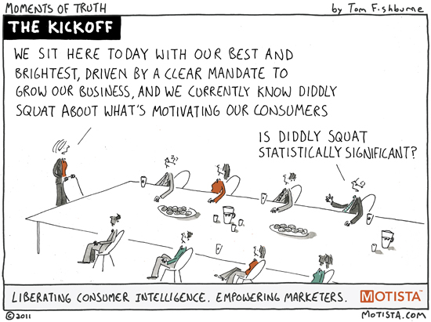

I was thinking about future value this morning. Why? because I was thinking about this Chinese phrase, 寅吃卯粮, which means that one consumes savings meant for future use. The term bears a negative emotion that is used to criticize someone or some action that is irresponsible (in view of the present) and generally a bad idea. After all, shouldn't one only use what his means can cover? It is a conservative approach, and also sustainable.
What's the equivalent in english? I thought of future value. Isn't it the same thing that we are mapping future values to current so we can benefit from, or consume, it right now. For all we know, forget about the future. It's uncertain and nobody knows how well those so called future values will be realized and how well they matching our estimation right now.
The reason I was toying these terms was that I was thinking the root cause of wealth. I always thought that the only way to become rich is to take leverage. What is a leverage, borrowing money, use the resource that you don't own, and with less cost than the benefit you can get out of them. A convenient way is certainly to borrow from the someone, somewhere, and don't need to pay for it. It's free money, isn't it? Future seems to be a perfect candidate for this. Nobody has a crystal ball that actually works, but everyone has a lot of hope. And what is expectation? it is completly subjective, opinionated, and absolutely impossible to validate (until it becomes history). But doesn't the logic smell wrong? How can you get a free lunch without paying a price? and if it's not you who pays the price, then who will? I learned FV in MBA class. The math is simple enough and at the time I thought this is an artificial invention used only in finance to make yourself look smart, important and closer to the truth of wealth. But suddenly I had a thought — no, it is not a new concept, and it is not just in finance. It is everywhere.
FV the consumer
Stock price, bond price are all computed based on FV. Market adjusts their prices based on runtime guess of what the FV is like. Therefore it will fluctuate constantly. In its core it is consensus decision making where all market participants are casting a vote. The price is nothing but a form of FV. But finance ppl are crooks, you say. They invented these theories so to justify their irresponsible actions today. How can there be no harm done if to take what belongs to the future and use them now? Just take a look at social security, working class are paying for their parents' generation, and so hope their kids will pay theirs. This is a ponzi scheme in reality. So what is a counter example to this? How about manufacturing? They are solid ppl who make stuff, and making stuff creates value. You can NOT BS around making a solid bulk of physical stuff, a pile of steel that hums, works, and makes your life better. Well, let's see.
You have a need to wash your clothes. When you buy a washing machine, you have taken the underline assumption that you will be using it not just once, but multiple times in the future. There is a life time by design, of course, and no one really keeps track of how many loads one does per week, and how many uses you will be doing in the next 5 years or before the machine is broken. But that's exactly how the price represents — one implicitly gives each load a price, multiplied over a time span and FV back to the present! This explains exactly why ppl cares about quality — because one doesn't know how many times she is going to use the washing machine, the longer it last, or the more loads you throw at it, the greater its FV should be, then discounted to PV, it should have a higher price. Now if you buy it lower than the PV in your mind, you feel it is a good deal — this, I call it the truth of the consumer threshold.
FV the service
The story doesn't end here. So after all, the logic of FV is correct? The financial gurus and manufacturer of consumer goods are all operating by the same principle. What about the present? We constantly hear the preach that happiness is about the present and one should live by the moment. Then how can one do that if one's consumer instinct is naturally about the future, about FV. Is there anything only valued at present? How about food? Food is consumed in the moment, right? There isn't a future value associated with it, or is there? Or any other service, a haircut, a smile from a cashier, grocery shopping... transactions are done then and now, you pay, you get your goods, done, period.
We don't lump sum future services and discount them to a PV price, do we? or we actually do? When I sit in a restaurant ordered a dish, am I only paying for this round, this dish, or there is a share of the well being of this restaurant tomorrow, and next week? Certainly the profit is the media, or the hidden contract, between me as the consumer eating this dish, and the restaurant who does its share to be here and continue its service and maintain its quality. How well, or strong, should both parties support this bond? Doesn't this make those thin-margin, low-prices strategy a weaker contract or equally the same? and when we shop in those value stores, are we lowering our expectation, thus our FV, but still expecting the contractual promise hold true?
Everybody understand you get what you pay for. Yet, we constantly struggle between a mismatched over-estimated FV (by our subjective will) and perception of a less qualified product/service. In math term and in common sense, this gap will never go away, and should never go away. If FV becomes a fixed value (think about planning economy where some God view determines a price, how ridiculous it is if you think of it in this context — consensus voting is the only way to discover and determine this value, therefore the market), how to fix the PV offered by service providers? and even more troublesome is that how do you know the consumer agrees with provider on each other's estimation? Taking the washing machine example, I am willing to put in $1 for a load, and wash weekly. So 10yr span will cost me $520. Anything more expansive than this is a ripoff, unless I decide to wash 2 loads per week now or the machine lasts more than 10 years.
Turn the able around, if I manufacture washing machine, I want to know how many loads in avg a family of size-xyz (look up your country's demographics and household size) will do, and how much they are willing to pay per such use, then take the design life that I can deliver (again, in avg), it's the price my consumers are willing to accept. The trick then, is how well I can discover these numbers comparing to how well my competitors are using these numbers. If my competitor builds a machine twice as durable as mine but sell at the same PV, should I panic? Obviously now with the context we have discussed, the key to answer this is not how durable his machine is, but how often consumer changes their machines! — the design life time should last slightly longer than what customers are expecting to use it for, in theory. If it is too durable, it is an over design and is a waste. Therefore, a strategy to defeat my competitor at perception level, I want to show a machine that lasts twice as long as others' in the market — no one is to going to keep it that long, but the image matters.
Marketing time

Well, the scenario we discussed so far is implying that consumer will determine the end date of your discount period — averagely use a washing machine for 10 years. We know PV is heavily depending on the time length. Can we determine or control this time length then?
Many variables come to play, disruptive technology, shift of consumer interest, fashion, some social change, new generation... this becomes a fuzzy war. So we need marketing, a voice in consumer's head that now you should ditch the old product and buy a new one. The more effective marketing is done, the more deterministic the replenish cycle can be. Therefore, marketing pushes the FV as much as possible, and controls the discount period as much as possible. In math it then becomes apparent the shorter the cycle the higher the PV. Therefore, if FV are similar, competitors have a diring need to shorten the cycle, and this I believe is the true root cause of product innovation → to the control the cycle.
Interesting, isn't it? So back the our initial topic, I used to think FV is a fancy term that MBA uses to showoff his education. Now I realized FV and PV are everywhere. It is the only way to perceive this world, it is human nature. So again, I start to believe more and more that economy and finance are not about numbers, theories of money or currency or some conspiracy theory of political domination. It is about human nature, about what we really are. Extract the underline assumption, and you will see what these terms really mean.
— by Feng Xia